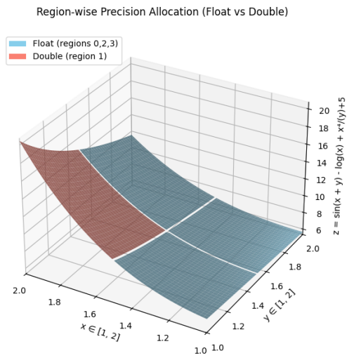
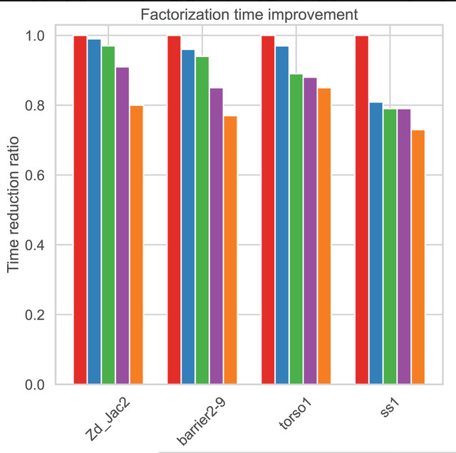
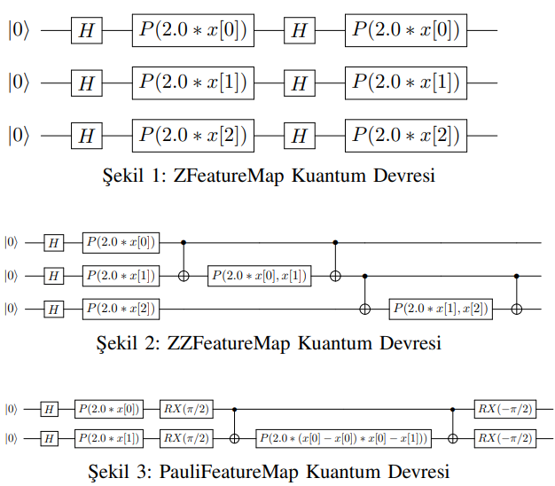
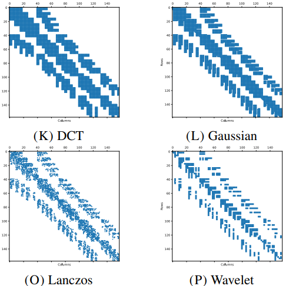

Asst. Prof. at Ankara Yildirim Beyazit University in
Computer Engineering Department.
email: fstorun at aybu.edu.tr,
fsukrutorun@gmail.com
|
- High Performance Computing
- Parallel and Distributed Computing
- Graph and Hypergraph Partitioning
- Numerical Linear Algebra
- Parallel Iterative Solvers
- Parallel Sparse Matrix Operations
Adaptive Mixed-Precision Monte Carlo Integration on GPUs
Monte Carlo integration (MCI) is widely used for evaluating high-dimensional or non-analytic functions, but its large number of function evaluations can
make it computationally demanding. As modern scientific applications increasingly rely on GPU acceleration, balancing numerical accuracy and performance
has become a key challenge. To address this, we present a GPU-accelerated mixed-precision MCI framework that adaptively selects precision based on local
numerical behavior using heuristics derived from gradient, variance, and average value analysis. Two precision allocation strategies are explored: term-wise and
region-wise, both implemented with CUDA batch processing to maximize GPU efficiency. Experimental results on representative test functions of varying dimensionality demonstrate speedups of up to 4.9× compared to full double precision,
while maintaining controlled relative error.
More
|
 |
Improving parallel hybrid solvers through block low-rank compression and adaptive threshold selection
Sparse linear systems play an important role in scientific computing and large-scale simulations.
They often become the main computational bottleneck.
For solving such systems, Krylov and multigrid methods are the predominant iterative approaches, while the block Cimmino (BC) method offers a hybrid,
projection-based alternative with strong parallel efficiency and direct-solver robustness. Existing studies have predominantly focused on
improving the iterative aspects of BC, while its direct solution is relatively neglected.
This study addresses this gap by proposing a block low-rank (BLR) compression–based approach to accelerate the direct solution of BC.
In BC, block solutions are often computed with higher precision than needed, leading to unnecessary computational effort.
By employing the BLR technique, we reduce parallel time and the memory consumption required for the factorization and solution of blocks,
while preserving its convergence properties.
More
|
 |
Performance Comparison of Support Vector Machines in Quantum Machine Learning Using Qiskit, Cirq, and Pennylane Frameworks
Quantum computing has the capability to efficiently solve complex problems that would require significantly longer processing times on classical computing systems.
This study investigates the practical applications of quantum machine learning by comparing the performance of classical Support Vector Machines (SVM) and
Quantum Support Vector Machines (QSVM) across three simulation-based quantum computing platforms: Qiskit, Cirq, and Pennylane.
Through experiments conducted on various datasets, the study examines the influence of different feature mapping
techniques—ZFeatureMap, ZZFeatureMap, and Pauli-FeatureMap—on the encoding of data into quantum states within QSVM models.
More
|
 |
MatGen: A Realistic Sparse Matrix Generator Using Signal Processing And Image Processing Methods
The limited size of publicly available sparse matrix datasets creates a significant challenge for benchmarking, testing,
and validating algorithms in scientific computing, artificial intelligence and other data-intensive applications.
Existing approaches such as random matrix generators or general data augmentation methods often fail to produce structurally realistic matrices.
To address this gap, we present MatGen which a tool for generating realistic variations of a given sparse matrix using signal processing and image processing techniques.
MatGen takes a real sparse matrix as input and produces structurally consistent matrices at different sizes, introducing controlled variation while preserving key sparsity patterns
More
|
 |
A distributed memory parallel randomized Kaczmarz for sparse system of equations
Kaczmarz algorithm is an iterative projection method for solving system of linear equations that arise in science and engineering problems in various application
domains. In addition to classical Kaczmarz, there are randomized and parallel variants.
The main challenge of the parallel implementation is the dependency of each Kaczmarz
iteration on its predecessor. Because of this dependency, frequent communication is
required which results in a substantial overhead. In this study, a new distributed parallel method that reduces the communication overhead is proposed. The proposed
method partitions the problem so that the Kaczmarz iterations on different blocks are
less dependent.
More
|

|
Row Replicated Block Cimmino
We study a new technique for reducing the number of iterations of the block Cimmino
method by replicating rows in the partitioned system, so that we obtain a nondisjoint partitioning
of the rows. Since rows in different partitions that are close to colinear produce a poorly conditioned
iteration matrix for the block Cimmino method, row replication can get around this problem. With
intelligent replication choices, we can reduce the number of iterations for convergence of the replicated
block Cimmino method. The downside is a slight increase of the computational workload associated
with each partition. In order to find a trade-off between a lower number of iterations and a higher
cost per iteration, selecting the proper set of rows for replication is crucial. In this paper, we use
graph-based techniques to find good candidates for replication.
More
|

|
Quadratic programming based partitioning for Block Cimmino with correct value representation
The block Cimmino method is successfully used for the parallel solution of large linear systems of equations due to its amenability to parallel processing.
Since the convergence rate of block Cimmino depends on the orthogonality between the row blocks, advanced partitioning methods are used for faster convergence.
In this work, we propose a new partitioning method that is superior to the state-of-the-art partitioning method, GRIP, in several ways.
More
|

|
Enhancing Block Cimmino for Sparse Linear Systems with Dense Columns via Schur Complement
The block Cimmino is a parallel hybrid row-block projection iterative method successfully used for solving general sparse linear systems.
However, the convergence of the method degrades when angles between subspaces spanned by the row-blocks are far from being orthogonal.
The density of columns as well as the numerical values of their nonzeros are more likely to contribute to the nonorthogonality between row-blocks.
We propose a novel scheme to handle such “dense” columns. The proposed scheme forms a reduced system by separating these columns and the respective rows from the original coefficient matrix and handling them via the Schur complement.
More
|

|
Partitioning and Reordering for Spike-Based Distributed-Memory Parallel Gauss-Seidel
Gauss--Seidel (GS) is a widely used iterative method for solving sparse linear sys-tems of equations and also known to be effective as a smoother in algebraic multigrid methods.Parallelization of GS is a challenging task since solving the sparse lower triangular system in GSconstitutes a sequential bottleneck at each iteration.
We propose a distributed-memory parallel GS(dmpGS) by implementing a parallel sparse triangular solver (stSpike) based on the Spike algorithm.
More
|

|
Parallel solution of Lambert’s problem using modified Chebyshev-Picard iteration method
Lambert’s problem is one of the classical methods for solving the multiple revolution problem in orbit determination.
With the increasing interest in space exploration programs and using satellite networks, it is important to provide an accurate and rapid method that will provide the network control center with information regarding the orbit of each satellite in the network and help the satellites improve routing decisions in onboard processing satellites.
More
|

|
Parallel K-means Clustering With Naïve Sharding for Unsupervised Image Segmentation via MPI
In digital image processing, image segmentation is an essential step in which an image is partitioned into groups of pixels.
K-means clustering algorithm, which is often considered as fast and efficient, is one of the most widely used clustering algorithms to segment an image.
More
|

|
Improving the scalability of the ABCD Solver with a combination of new load balancing and communication minimization techniques
The hybrid scheme block row-projection method implemented
in the ABCD Solver is designed for solving large sparse unsymmetric
systems of equations on distributed memory parallel computers. The
method implements a block Cimmino iterative scheme, accelerated with
a stabilized block conjugate gradient algorithm. An augmented pseudodirect variant has also been developed to overcome convergence issues.
More
Conference Program |

|
Parallel Minimum Norm Solution of Sparse Block Diagonal Column Overlapped Underdetermined Systems
Underdetermined systems of equations in which the minimum norm solution needs to be
computed arise in many applications, such as geophysics, signal processing, and
biomedical engineering. In this article, we introduce a new parallel algorithm for
obtaining the minimum 2-norm solution of an underdetermined system of equations.
The proposed algorithm is based on the Balance scheme, which was originally developed
for the parallel solution of banded linear systems.
The proposed scheme assumes a
generalized banded form where the coefficient matrix has column overlapped block
structure in which the blocks could be dense or sparse.
More
|

|
Solving Sparse Underdetermined Linear Least Squares Problems on Parallel Computing Platforms
Computing the minimum 2-norm solution is essential for many areas such as geophysics, signal processing and biomedical engineering.
In this work, we present a new parallel algorithm for solving sparse underdetermined linear systems where the coefficient matrix is block diagonal with overlapping columns.
The proposed parallel approach handles the diagonal blocks independently and the reduced system involving the shared unknowns.
Experimental results show the effectiveness of the proposed scheme on various parallel computing platforms.
|
|
A Novel Partitioning Method for Accelerating the Block Cimmino Algorithm
We propose a novel block-row partitioning method in order to improve the convergence rate of the block Cimmino algorithm for solving general sparse linear systems of equations.
The convergence rate of the block Cimmino algorithm depends on the orthogonality among the block rows obtained by the partitioning method.
The proposed method takes numerical orthogonality among block rows into account by proposing a row inner-product graph model of the coefficient matrix.
More
|

|
Minimizing Communication Through Computational Redundancy in Parallel Iterative Solvers
Sparse matrix vector multiplication (SpMxV) of the form y = Ax is a kernel operation in iterative linear solvers used in scientific applications. In these solvers, the SpMxV operation is performed repeatedly with the same sparse matrix through iterations until convergence. Depending on the matrix and its decomposition, parallel SpMxV operation necessitates communication among processors in the parallel environment. The communication can be reduced by intelligent decomposition. However, we can further decrease the communication through data replication and redundant computation. The communication occurs due to the transfer of x-vector entries in row-parallel SpMxV computation. The input vector x of the next iteration is computed from the output vector of the current iteration through linear vector operations.
More
|

|

Numerically aware partitioning for Block CimminoSource code for numerically aware row-block partitioning for Block Cimmino Iterative method in ABCD Solver is source code is distributed under the GNU Lesser General Public License. This is a simplified C++ implementation of the work that is published in SIAM SISC 2018. >> GRIP (Row Inner-Product Graph partitioner for ABCD) version 1.1 << |
ParBaMiN: Parallel Balance Scheme Algorithm for Minimum Norm Solution of Underdetermined Systems
A distributed parallel algorithm for solving minimum 2-norm solution of an underdetermined system on distributed memory high performance computing (HPC) platforms. This software is implemented in C++ programming languages and it uses MPI library for communication among processors.
Each processor concurrently and independently applies QR factorization on the sub-matrices. Sparse QR factorization of SuiteSparse (www.suitesparse.com) package is used in local sparse QR factorization operations.
The performance of the proposed method may increase by adding the parallelism mechanisms of multi-threaded SuiteSparseQR and multi-threaded BLAS for the local QR factorizations.
This algorithm can be considered as an scalable extension of any multithreaded general sparse QR factorization algorithm
to distributed memory architectures for computing minimum 2-norm solution of underdetermined linear least squares problems.
ParBaMiN |
ParBaMiN_matlab: A Sequential MATLAB program for Parallel Balance Scheme Algorithm for Minimum Norm Solution of Underdetermined Systems
A simple MATLAB program for the solving Minimum Norm Solution of Sparse Block Diagonal Column Overlapped Underdetermined Systems.
It is a sequential version of Parallel Minimum Norm Solution of Sparse Block Diagonal Column Overlapped Underdetermined Systems.
Sparse QR factorization with Householder reflection of spqr routine in SuiteSparseQR package is used in local sparse QR factorization operations.
ParBaMiN_matlab |
EoCoE: Energy oriented Centre of ExcellenceThe project coordinates a pan-European network covering 21 teams in 8 countries with a total budget of 5.5 M€. EoCoE assists the energy transition via targeted support to four renewable energy pillars: Meteo, Materials, Water and Fusion. These four pillars are anchored within a strong transversal multidisciplinary basis providing high-end expertise in applied mathematics and HPC. |
|
TUSAS Lift Up 2021: Yüksek Doğrulukla Yabancı Madde Tespiti (YAMATE) - Detection of Foreign Objects With High Accuracy
The aim of our project, "Detection of foreign objects with high accuracy", is to prevent damage to aircraft caused by foreign objects in the flight area. Flight areas must be
clean and safe to provide a suitable environment for the landing and take-off of aircraft produced at high costs. Foreign objects that cannot be detected in the flight area can damage aircraft and
cause accidents. For this purpose, the first step of our project, which includes various stages, is the development of real-time image processing software that works with high accuracy and is
trained with customized data sets in this context.
More
Report |
 |
Undergraduate Courses:
- CENG206 Concepts of Programming Languages
- CENG305 Operating Systems
- CENG342 Parallel Programming
- CENG327 Introduction to Scientific Computing
Graduate Courses:
- CENG502 Parallel Algorithms
- CENG508 Distributed Systems
- CENG595 High Performance Scientific Computing
- CENG596 JULIA High Performance